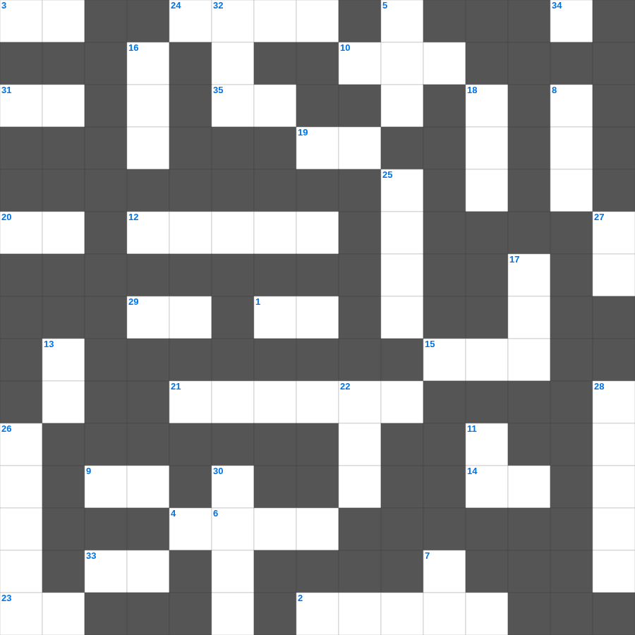

예수님의 성품
📌 서비스 정의
십자가로세로는 교회 주보와 주일학교에서 사용할 수 있는 성경 기반 가로세로 퍼즐 서비스입니다. 성경 인물, 사건, 핵심 구절을 바탕으로 제작되었습니다. 온라인 풀이 및 인쇄 기능을 제공합니다.
📖 이 글은 어떤 내용인가요?
성경은 예수님의 성품을 통해 그분이 어떤 분이신지를 보여줍니다. 온유와 겸손, 자비와 긍휼, 의로움과 진실함은 복음서 곳곳에서 드러나는 예수님의 모습입니다. 이 퍼즐은 예수님의 성품을 나타내는 표현들을 통해 그분을 더 깊이 알아갑니다.
📚 핵심 포인트
온유하고 겸손하심 · 죄인을 향한 긍휼 · 진리를 말씀하시는 담대함 · 어린아이를 사랑하심 · 끝까지 인내하시는 사랑
예수님의의 말씀을 퀴즈로 배우는 예수님의 말씀 퀴즈입니다. 가로 힌트와 세로 힌트를 보고 35개의 단어를 맞춰보세요. 인쇄도 가능하고 정답 확인도 바로 되니 소그룹 모임이나 가정 예배 시간에도 활용하실 수 있습니다.

📝 가로 힌트
1. 등불을 들고 신랑을 기다리는 열 명의 이것
2. 베드로가 예수님을 모른다고 세 번 부인한 후 들린 소리
3. 야곱이 사다리 환상을 본 곳
4. 빌립이 전도한 제자
9. 지성소와 성소를 가로막고 있던 천
10. 이스라엘의 유일한 여성 사사
12. 아브라함이 떠난 고향
14. 사랑, 희락, 이것
15. 예수님의 제자 수
19. 마지막 재앙: 처음 난 것들의 이것
20. 에덴의 동쪽으로 쫓겨난 인류
21. 무화과나무가 마른 이유
23. 믿음 소망 사랑 중 제일은 이것
24. 아말렉과의 전쟁에서 모세의 손이 올라가면 이김
29. 하나님의 끝없는 자비
31. 불뱀에 물린 자들이 이것을 보면 살았다
33. 영접하는 자 곧 그 이름을 믿는 자들에게는 하나님의 이것이 되는 권세
34. 우리가 알거니와 하나님을 사랑하는 자 곧 그의 뜻대로 부르심을 입은 자들에게는 모든 것이 협력하여 이것을 이루느니라
35. 성령의 9가지 열매 중 첫 번째
📝 세로 힌트
5. 대제사장의 흉패에 박힌 열두 보석 중 하나
6. 세계 최초의 소방관은 누구일까요? (불 속에서 살아남음)
7. 바울의 고향
8. 엘리야가 바알 선지자와 대결한 산
11. 천국은 밭에 감추인 이것과 같으니
13. 사람이 마음으로 믿어 의에 이르고 입으로 이것하여 구원에 이르느니라
16. 바울이 로마로 가기 전 마지막으로 머문 섬
17. 노아의 방주에 탄 사람의 총수
18. 안드레의 형제
22. 보라 세상 죄를 지고 가는 하나님의 이것
25. 베드로가 밤새 그물을 던졌으나 잡지 못했을 때 하신 일
26. 웃사가 법궤를 만지다 죽은 사건
27. 성전 세로 바쳤던 은화
28. 탕자가 돌아왔을 때 아버지가 입혀준 것
30. 예수님을 판 제자
32. 성령님이 우리 곁에서 돕는 분이라는 뜻
🧩 이 퍼즐에서 배우는 내용
이 퍼즐은 예수님의 성품의 핵심 단어와 개념을 자연스럽게 복습할 수 있도록 구성되었습니다. 주일학교 수업이나 개인 성경공부에서 학습 내용을 점검하는 용도로 바로 활용할 수 있습니다.
🧑🏫 교회 교육 자료 활용
이 퍼즐은 주일학교 교재 추천 자료로 활용할 수 있고, 주일학교 주보에 넣기 좋은 분량으로 구성되어 있습니다. 수업용 주일학교 교안에 활동지로 붙이거나, 예배 후 복습용 주일학교 공과교재로 바로 사용할 수 있습니다.
🏷️ 키워드
예수님의 말씀 퀴즈, 예수님의, 십자가로세로, 성경퀴즈, 말씀퀴즈, 가로세로퍼즐, 주일학교 교재 추천, 주일학교 주보, 주일학교 교안, 주일학교 공과교재